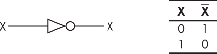
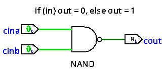

A basic Logic Gate that inverts the input signal.

The NOT gate is a digital logic gate that produces an output that is false only if its input is true.

The internal circuit of the NOT gate.
Reference
-
Fox, C. (2024). Computer architecture: From the stone age to the quantum age. No Starch Press.
-
Nisan, N., & Schocken, S. (2021). The Elements of Computing Systems: Building a modern computer from first principles. The MIT Press.